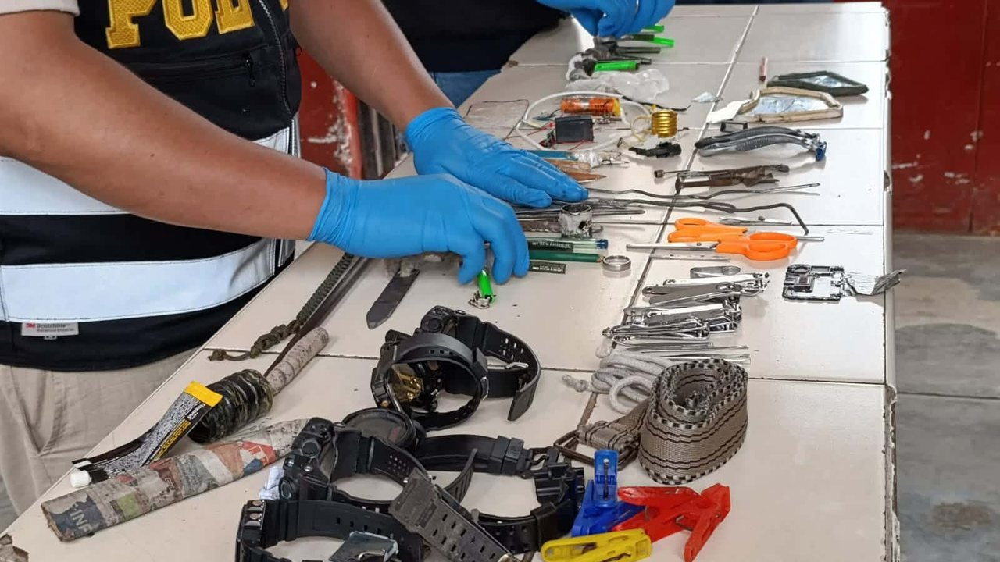
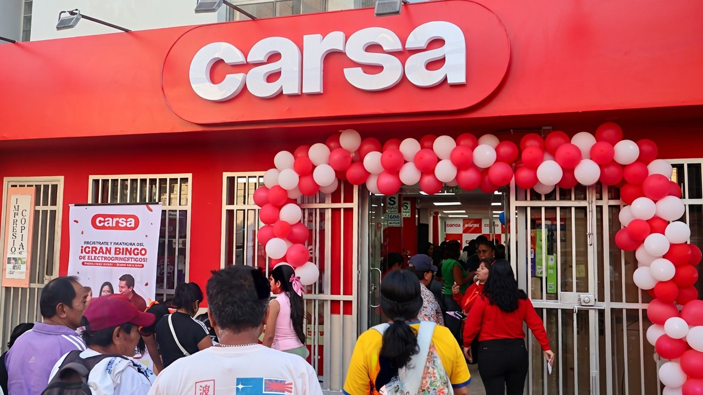
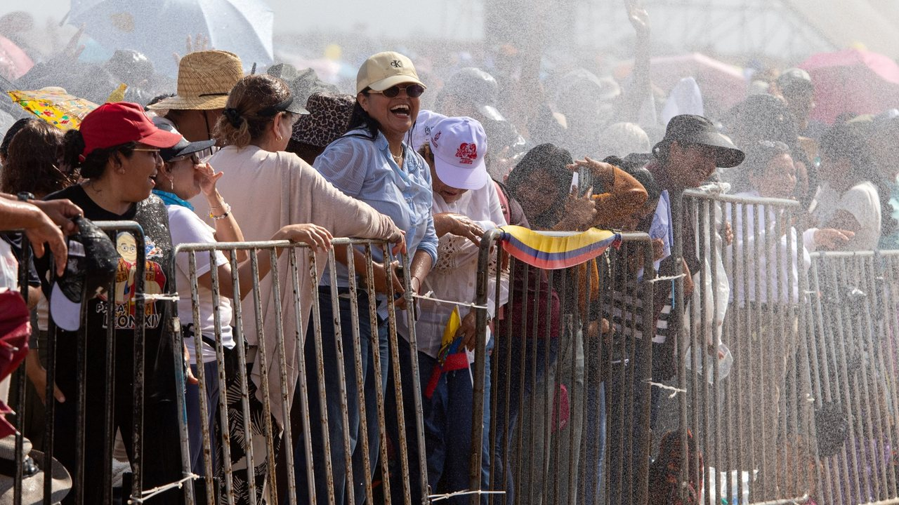
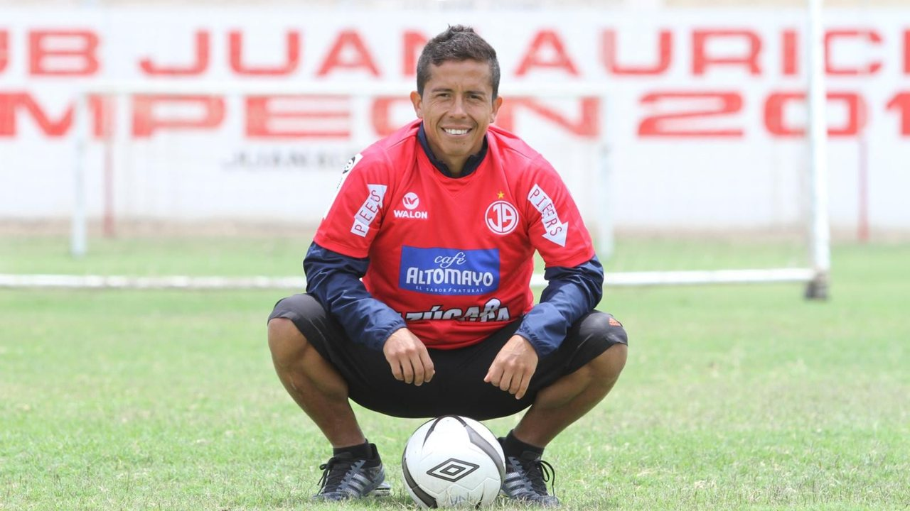
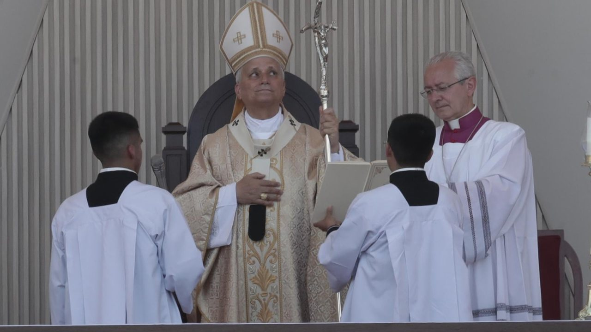

Luego de participar en las actividades oficiales previstas para el primer día de su visita apostólica al Perú, el papa León catorce llegó esta noche a la Nunciatura Apostólica, ubicada en el distrito de Jesús María.







Luego de participar en las actividades oficiales previstas para el primer día de su visita apostólica al Perú, el papa León catorce llegó esta noche a la Nunciatura Apostólica, ubicada en el distrito de Jesús María.
Diversas piedras, llantas y residuos sólidos fueron encontrados en el interior de los buzones del sistema de alcantarillado de la avenida Buenos Aires, durante los trabajos de limpieza y descolmatación ejecutados por personal de la Municipalidad Provincial de Sullana.
Ante las constantes observaciones y reclamos de numerosos comensales por las condiciones de higiene en establecimientos gastronómicos del sector El Chaco, en Paracas (Pisco), las autoridades realizaron un operativo inopinado de inspección a restaurantes y comercios de esta concurrida zona turística.
Trujillo: Incautan objetos punzocortantes en el penal El Milagro La requisa se ejecutó en el pabellón 3 y se revisaron siete celdas La requisa se ejecutó en el pabellón 3 y se revisaron siete celdas.
Ocho años de vida pastoral, amistades y trabajo junto a la comunidad chiclayana dejaron una huella que el tiempo no borró.
Tras recuperar la explanada norte del estadio Melgar hace más de un mes, el Instituto Peruano del Deporte (IPD) aún enfrenta conflictos de carácter administrativo y legal en otros siete escenarios deportivos de la región. Así lo informó la presidenta del Consejo Regional del Deporte de Arequipa, Glissolym Montaño.
Hoy tenemos 125 tiendas, entre Carsa y las 10 de El Gallo más Gallo que, entre fines de noviembre e inicios de diciembre, pasarán a ser Carsa, Carsa Motos o Carsa Tec.
El papa León catorce llegará este sábado 14 de noviembre a Santa Cruz de Succhabamba, en Cajamarca, a las a. Después de la celebración, León catorce partirá de Santa Cruz de Succhabamba a las p.
La investigación está relacionada con la operación Sail Away de la Fuerza de Tarea de Seguridad Nacional de Estados Unidos. Cuatro de los procesados también estarían relacionados con un plan para introducir narcóticos ilegalmente a Estados Unidos.
Cada edición dura menos de dos minutos. En la web tienes el resumen de cada historia y el enlace directo al medio original para leerla completa.
Conoce Olfatecho →